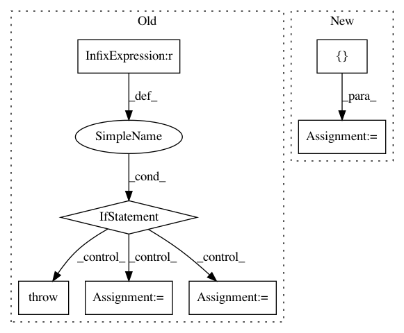

9c158b87f5fb2dca1ed95884e667ab2fc218e1b7,dragonn/models.py,SequenceDNN,deeplift,#SequenceDNN#,175
Before Change
Returns (num_task, num_samples, 1, num_bases, sequence_length) deeplift score array.
if sys.version_info[0] != 2:
raise RuntimeError("DeepLIFT requires Python2!")
assert len(np.shape(X)) == 4 and np.shape(X)[1] == 1
from deeplift.conversion import keras_conversion as kc
from deeplift.blobs import NonlinearMxtsMode
// normalize sequence convolution weights
kc.mean_normalise_first_conv_layer_weights(self.model, True,None)
// run deeplift
deeplift_model = kc.convert_sequential_model(
self.model, nonlinear_mxts_mode=NonlinearMxtsMode.DeepLIFT)
target_contribs_func = deeplift_model.get_target_contribs_func(
find_scores_layer_idx=0)
input_reference_shape = tuple([1] + list(X.shape[1:]))
return np.asarray([
target_contribs_func(task_idx=i, input_data_list=[X],
batch_size=batch_size, progress_update=None,
input_references_list=[np.zeros(input_reference_shape)])
for i in range(self.num_tasks)])
def in_silico_mutagenesis(self, X):
After Change
score_func = deeplift_model.get_target_contribs_func(
find_scores_layer_idx=0)
// use a 40% GC reference
input_references = [np.array([0.3, 0.2, 0.2, 0.3])[None, None, :, None]]
// get deeplift scores
deeplift_scores = np.zeros((self.num_tasks,) + X.shape)
for i in range(self.num_tasks):
deeplift_scores[i] = score_func(
task_idx=i,
input_data_list=[X],
batch_size=batch_size,
progress_update=None,
input_references_list=input_references)
return deeplift_scores
def in_silico_mutagenesis(self, X):
In pattern: SUPERPATTERN
Frequency: 4
Non-data size: 7
Instances
Project Name: kundajelab/dragonn
Commit Name: 9c158b87f5fb2dca1ed95884e667ab2fc218e1b7
Time: 2017-05-01
Author: jisraeli@stanford.edu
File Name: dragonn/models.py
Class Name: SequenceDNN
Method Name: deeplift
Project Name: GoogleCloudPlatform/python-docs-samples
Commit Name: 3397e6bfd55584c62d64911ecdaf588ca3469b79
Time: 2020-04-01
Author: 31518063+kurtisvg@users.noreply.github.com
File Name: noxfile-template.py
Class Name:
Method Name:
Project Name: kwgoodman/numerox
Commit Name: fc7be11817878870816dcec250ad285ac7856004
Time: 2018-10-19
Author: kwgoodman@gmail.com
File Name: numerox/report.py
Class Name: Report
Method Name: friends
Project Name: craffel/mir_eval
Commit Name: 7d805ab9d26c74db2319658f1ee1d0235f092845
Time: 2014-07-25
Author: craffel@gmail.com
File Name: mir_eval/input_output.py
Class Name:
Method Name: load_time_series